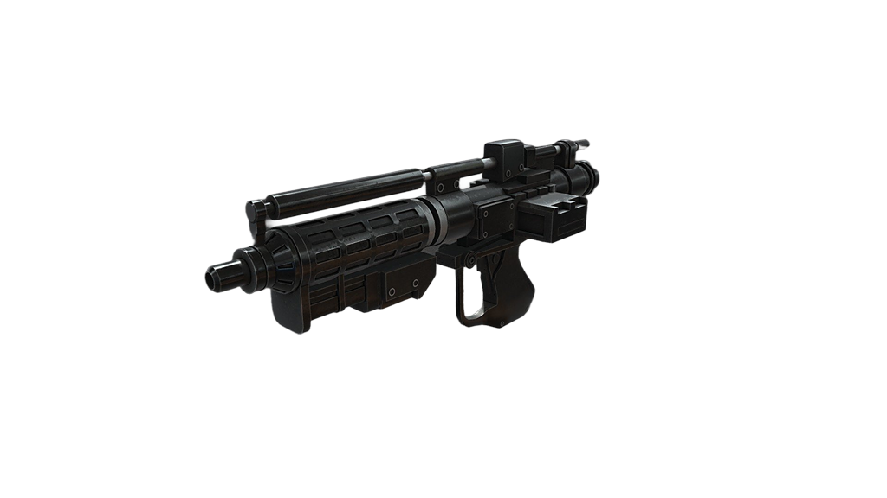
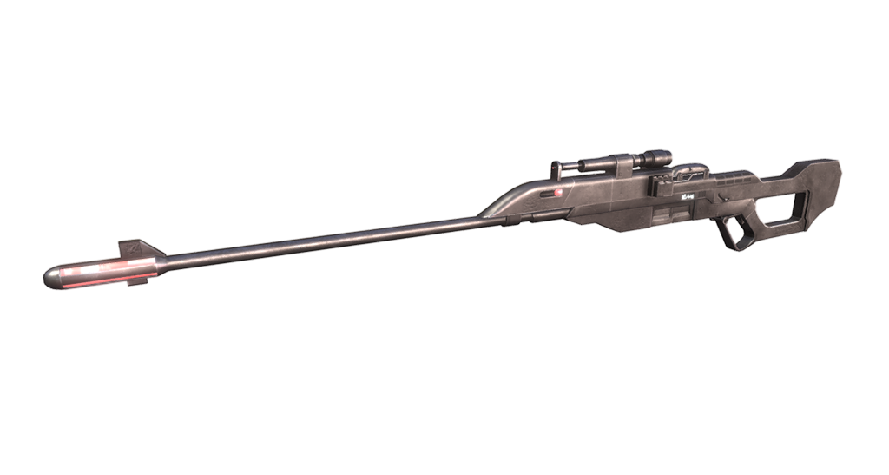
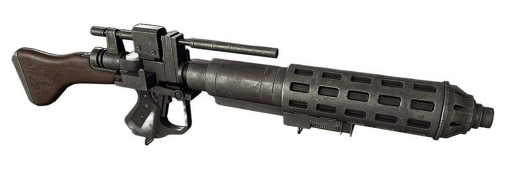
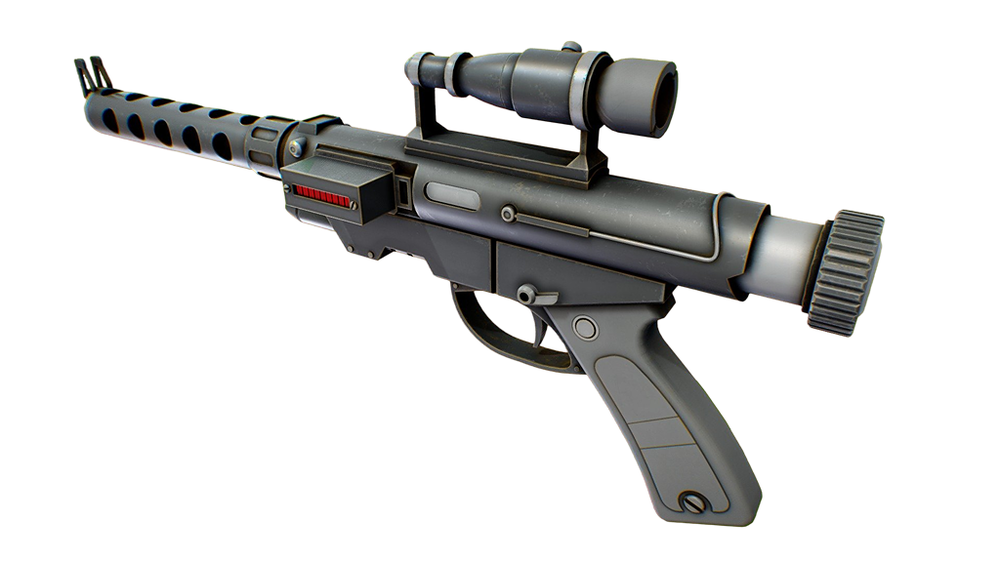
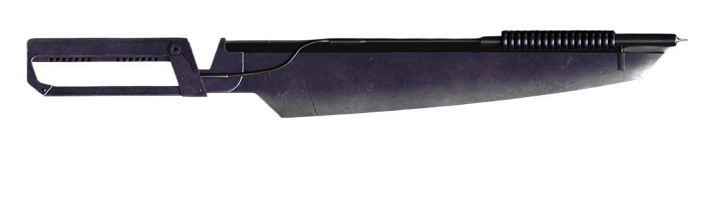
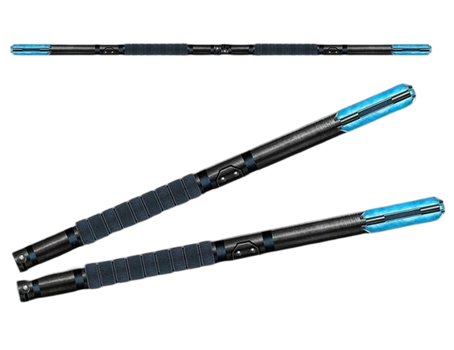

Вооружение КНС
Стандартное вооружение Конфедерации Независимых Систем

E-5 — бластерная винтовка
Автоматическая винтовка боевых дроидов B1, дроидов OOM и дроидов-коммандос BX. Имела большую газовую камеру, которая позволяла выполнять мощные выстрелы. Оружие было лёгким, но несколько неточным. Изготовлялось компанией «Оружейные Цеха Бактоид».
- Модель: E-5 blaster rifle
- Производитель: Оружейные Цеха Бактоид
- Размеры: средний
- Вес: 2,2 кг
- Вместимость: 30 выстрелов

E-5s — снайперская винтовка
Эти длинноствольные снайперские винтовки были созданы оружейниками компании Бактоид специально для дроидов-снайперов войск Конфедерации.
- Модель: E-5s sniper rifle
- Производитель: Оружейные Цеха Бактоид
- Дальность стрельбы: 500 метров
- Вес: 4.5 кг
- Ёмкость энергоячейки: 5 выстрелов

E-5C — повторяющаяся бластерная винтовка
Модификация стандартной винтовки E-5 с повышенной скорострельностью и ёмкостью магазина.
- Модель: E-5C
- Производитель: Бактоидная Броня Мастерская / Техно Юнион Земля Дивизион (по лицензии)
- Тип: Повторяющаяся бластерная винтовка

RG-4D — бластерный пистолет
Стандартный бластерный пистолет, используемый командирами боевых дроидов.
- Доступен для: Battle Droid Commander
- Тип оружия: Бластер Пистолет
- Модификаций: нет
- Предпосылки: нет

Vibro Sword Droid Commando BX — вибромеч
Более длинная и тяжелая версия виброклинка. Чаще всего из-за большого веса вибромеч приходилось держать двумя руками. Это оружие использовалось дроидами-коммандос BX-серии во времена Войн клонов, потому как было эффективно против клонов.
- Вес: 3 кг

Шоковая дубинка
Нелетальное оружие ближнего боя, которое оглушало живую цель электрическим разрядом.
- Тип: Оглушающая дубинка
- Эффект: Электрический разряд